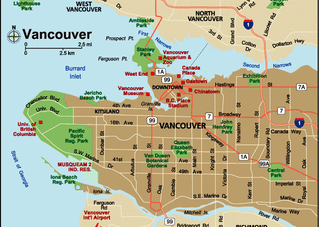

I am helping people from:
The Canada Guides is helping people to come in Canada and guide about the country. I provide some informations in applicaions and about living in the country. I have experienced in processing my owned documents when I came to Canada. I am happy to help and share my experienced as most people in Asia are interested to come and work in this country.
I would welcome the oppurtunity to learn more about the needs of any individual. Whatever your needs, I will help you identify opportunities and give you comprehensive means in achieving the results of your desire.
I made this website to help people as much I can to help you achieve your dream.
I had the idea in making this website as I have lot's of friends been asking since I move to Canada if how did I processed my papers? what are the requirments? how long it take to get it done? etc... In this website I am only helping not only a friend but also other people if you have further questions please don't hesitate to call my mobile and I'm happy to answer any further questions you want to ask.
 I am currently live in Vancouver at West 16th Ave. V6R 3E8 British, Columbia.British Columbia is the third largest and most westerly province in Canada, it's larger than any of the U.S. states, except Alaska, and is four times larger than Great Britain. The Yukon and Northwest Territories form B.C.'s northern border that stretches for 1062 km (669 mi.) along the 60th parallel, and to the east B.C. and the province of Alberta share a common boundary that runs in a northerly and southerly direction, as it follows the Rocky Mountains for 1545 km (973 mi.). To the south, British Columbia's neighbours are the states of Washington, Idaho and Montana, this border on the 49th parallel is 650 km (409 mi.) long. Forming the west boundary of B.C. is the Pacific Ocean. The distance of this coastline that includes the mainland and all islands is more than 27,000 km (16,900 mi.).